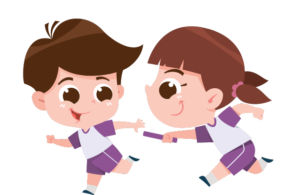
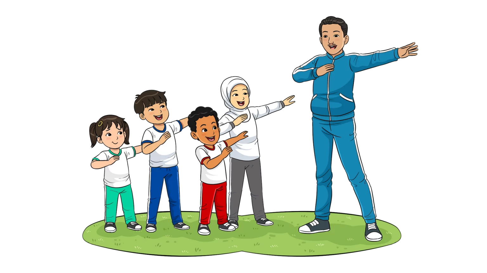

Sehat fisik dalam lingkungan pendidikan mencakup aktivitas yang mendorong siswa untuk aktif secara fisik dan menjaga kesehatan tubuh mereka. Kegiatan ini melibatkan latihan rutin yang dapat meningkatkan stamina dan kekuatan.
SKJ merupakan bentuk senam massal dengan rangkaian gerak tertentu dan diiringi musik, yang berguna meningkatkan kebugaran jasmani peserta didik. Selain itu, senam kesegaran jasmani merupakan media untuk mendorong perkembangan keterampilan motorik, kemampuan fisik, pengetahuan, penalaran, penghayatan nilai (sikap, mental, emosional, spiritual, sosial) dan pembiasaan pola hidup sehat yang bermuara untuk merangsang pertumbuhan serta perkembangan yang seimbang. Pelaksanaanya juga dapat dilakukan secara massal, mudah dan tidak memerlukan waktu yang lama.

Gerakan peregangan adalah gerakan yang dilakukan untuk meningkatkan
fleksibiltas otot atau jangkauan gerak sendi. Gerakan peregangan ini
sangat berguna bagi peserta didik ketika mereka akan melakukan
aktivitas fisik dan juga dapat melemaskan kembali bagian tubuh yang
kaku setelah beraktivitas.
Gerakan peregangan ini dapat dilakukan secara bersama-sama di dalam
kelas sesaat sebelum memulai kegiatan pembelajaran dan dapat juga
dilakukan ketika pergantian jam pelajaran atau saat istirahat.